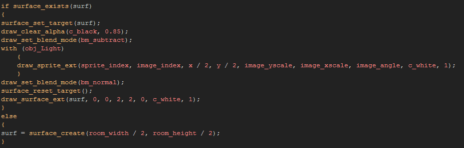
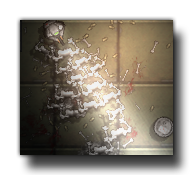

Tutorial
Page 6 of 10
Lights Part II
Okay, we have some bland lighting effects in our game, but they don't really stand out because we don't have any darkness to offset them with, do we? For that we are going to use another surface...
Create another new object and call it "obj_Light_Surface". Give it a depth of -1600 and in the create event add the initialising code for your surface as well as the room end code (remember
what we had for the previous two surfaces we made?).
Now, add a draw event to the object and in it place the following code:

Let's just look at this code for a moment... notice anything? Unlike the previous surfaces, this one we have created at half the room width and height. Why? Well, as we are now using a lot of surfaces for our
game we need to start thinking about memory issues, and if we can reduce the footprint of our game, then so much the better! By reducing the surface to half the size, we are reducing the memory that it needs for
storage, and we can draw it at double the size anyway using the draw_surface_ext() function to scale it to the full screen.
if you now look at the drawing of the lights to the surface, you can see that we half the x and y coordinates too, so that the lights are drawn at the correct relative position on the surface (Remember! Surfaces
always start at the (0,0) coordinate!) and we draw them with a scale of 1. The actual light objects have an image xscale and yscale of 2, so drawing them at 1 on a surface that is going to be scaled up
will make them appear to be the same size on the surface. Note too, that we could also use this scaling technique for the shadow surface too, and so make it smaller!
So what is actually happening here, other than drawing lights to a scaled surface? Well, here is the order of events in that code block:
- Set the surface target.
- Clear the surface to black, but with an alpha of 0.8 (change this for different degrees of darkness!).
- Set the blend mode to subtractive blending, as this will take the luminosity of what's drawn and set the alpha relative to the brightness of individual pixels.
- Go through the light objects and draw them. This punches a "hole" in the darkness thanks to the subtractive blending.
- Reset the drawing target to the screen.
- Draw the surface, scaled to the size of the screen.
No great mystery there, I hope... by now you should be familiar with all the functions we have used. It's time to add this light surface object into the room of our game, then give it a play and adjust the alpha values,
change the x/y scale of the lighting sprites etc... to see what type of different effect they have on the overall look.

Click on the Next button to go to the next page of the tutorial.